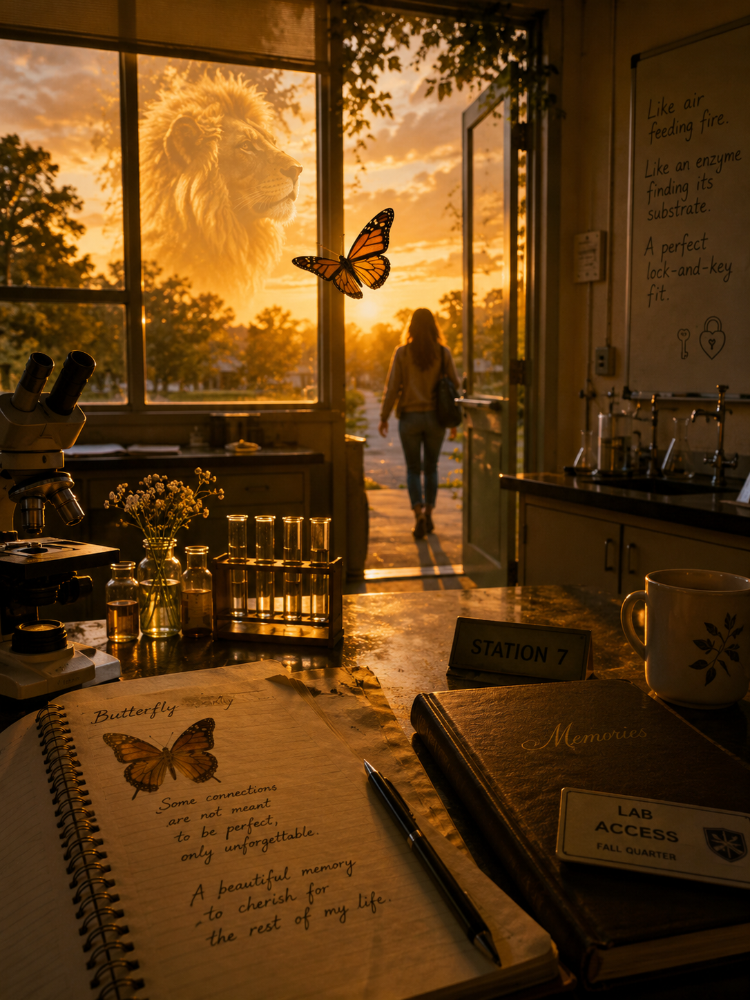

Butterfly and the Lion
🎵 "Echoes of Kyoto. A21" — Trycja (Pixabay Music)
Butterfly and the Lion is a story of an unexpected connection between two lab partners whose ordinary first meeting became an extraordinary memory. Inspired by the quiet chemistry between two different souls, the poem explores unspoken
feelings, timing, distance, and the lasting imprint of a bond that was never forgotten.
Like a butterfly drawn to the warmth of a lion, their connection represents the beauty of contrast, curiosity meeting confidence, gentleness meeting strength, and two hearts recognizing something rare before life carried them in different directions.
This poem is a tribute to the connections that leave a permanent mark on the heart, even when time and distance change
the path.
